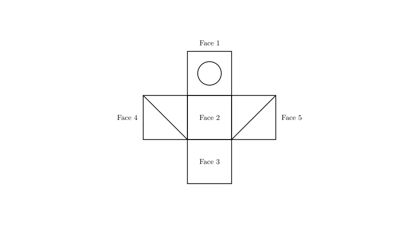
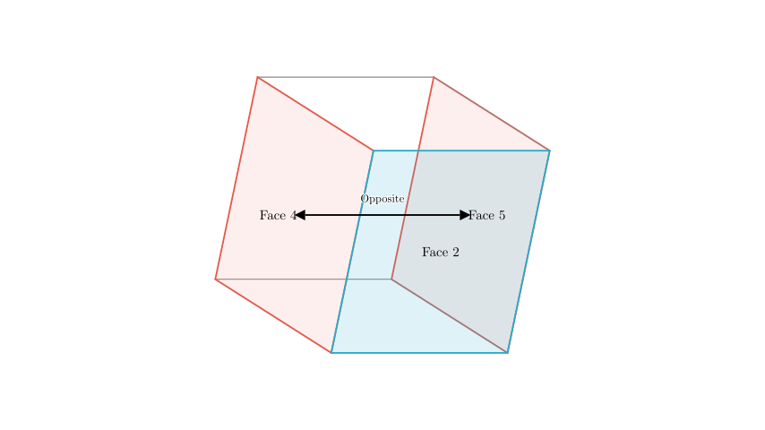
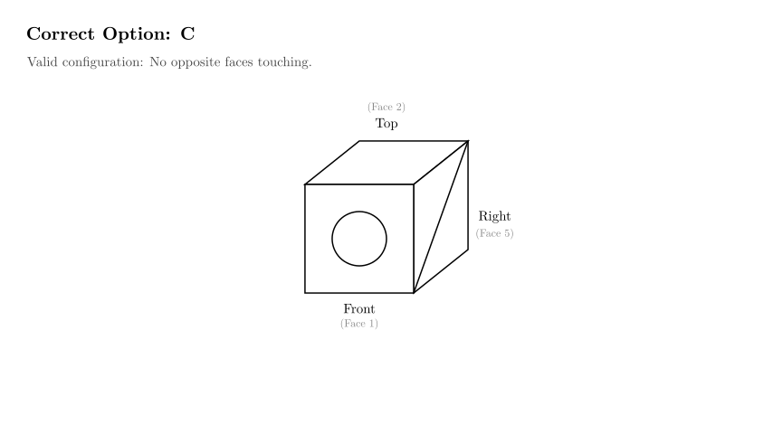

Problem Statement: Mingming folded a piece of paper (as shown in the diagram) into a cubic box, put a bottle of ink inside, and mixed it with other empty boxes. Based on observation alone, select which box contains the ink. (Which of the options A, B, C, or D corresponds to the unfolded net?)
Solution Approach: To solve this spatial reasoning problem, we will analyze the "net" (the unfolded 2D pattern) and determine the relative positions of the faces when folded into a 3D cube.

Step 1: Analyzing the Net and Adjacency
Let's examine the structure of the net shown in the diagram above: * Face 2 (the central blank square) acts as the central "anchor". * Face 4 (shaded) and Face 5 (shaded) are attached to opposite sides of Face 2. * Face 1 (circle) is attached to the top of Face 2. * Face 3 (blank) is attached to the bottom of Face 2.
Step 2: The "Opposite Faces" Rule
In any cube net, if three squares are arranged in a straight line (row or column), the two squares at the ends of the line will become opposite faces in the folded cube.
Looking at the horizontal row formed by Face 4, Face 2, and Face 5: * Face 4 is on the left of Face 2. * Face 5 is on the right of Face 2. * Therefore, when folded, Face 4 and Face 5 will be opposite each other (e.g., if Face 4 is the Left face, Face 5 is the Right face).
Crucial Deduction: Opposite faces can never share an edge, and you can never see both of them at the same time in a standard perspective view of a cube (which shows at most 3 faces).

Step 3: Eliminating Impossible Options
Now we apply the rule we just established: The two shaded faces cannot be seen together.
Let's check the options provided in the problem:
All three of these options violate the spatial rule derived from the net. The two shaded faces must be on opposite sides of the cube.

Step 4: Verifying Option C
Let's verify if Option C is physically possible.
This arrangement results in: * Top: Blank * Front: Circle * Right: Shaded
This matches Option C exactly. Note that Option C shows a shaded face on the right. In our specific fold (Face 2 as Top), the Right Wing (Face 5) becomes the Right face. Since only one shaded face is visible, this configuration is valid.
Conclusion: Options A, B, and D are impossible because they show opposite faces (the two shaded ones) touching each other. Option C is the only one that respects the geometry of the net.
Final Answer: C